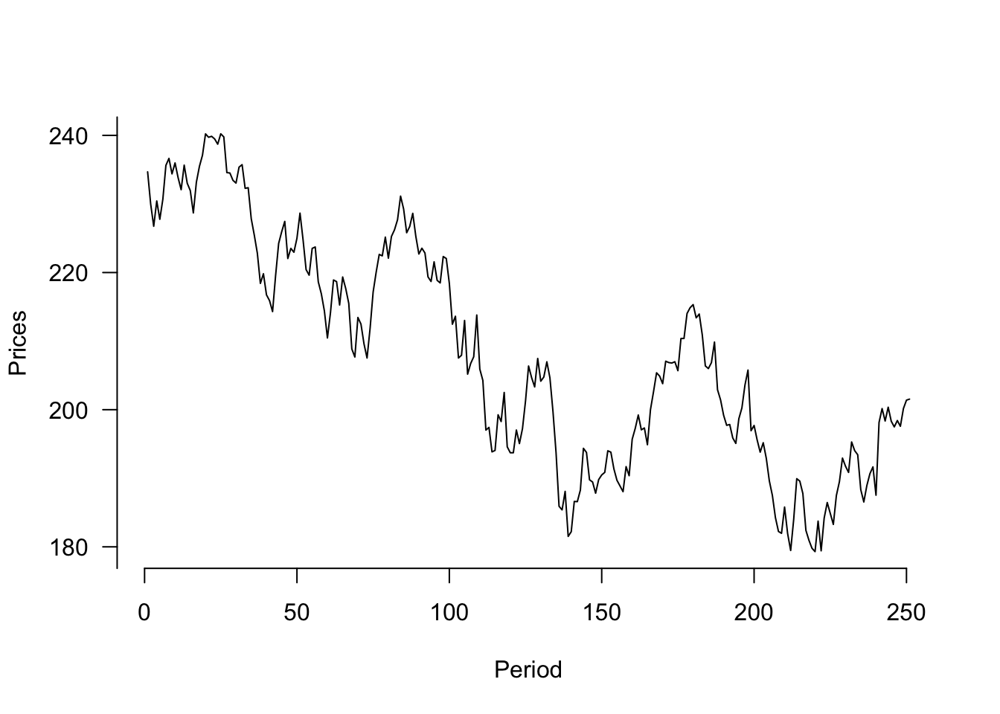
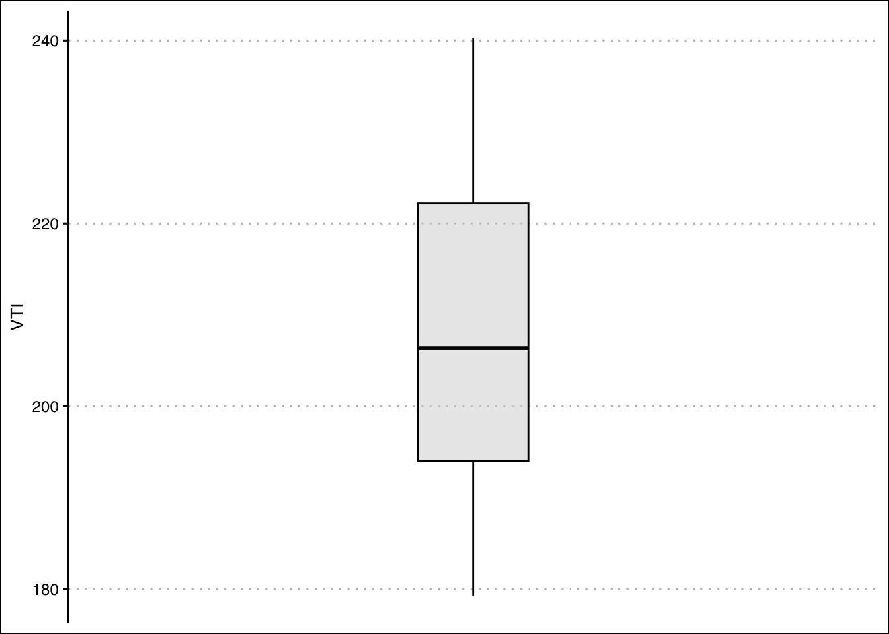
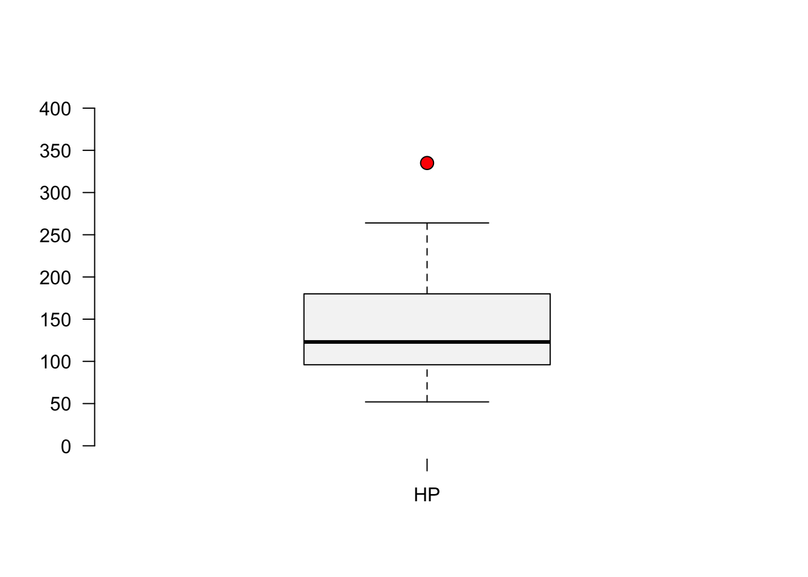

Ex1<-c(3,10,4,1,0,30,6)
quantile(Ex1,type = 6) 0% 25% 50% 75% 100%
0 1 4 10 30 A quantile is a location within a set of ranked numbers (or distribution), below which a certain proportion, \(q\), of that set lie. Ex: 0.25 of the data lies below the 0.25 quantile.
Percentiles express quantiles in percentage form. Ex: 25% of the data lies below the 25th percentile. To calculate a percentile:
Sort the data in ascending order.
Compute the location of the percentile desired using \(L_{p}=\frac{(n+1)P}{100}\) where \(L_{p}\) is the location of the \(P_{th}\) percentile, and \(P\) is the percentile desired.
The value at \(L_p\), is the the \(P_{th}\) percentile.
Chevyshev’s Theorem states that at least \(1-1/z^2\)% of the data lies between \(z\) standard deviations from the mean. This result does not depend on the shape of the distribution.
The Empirical Rule or (\(68\),\(95\),\(99.7\) rule) states that \(68\)%, \(95\)%, and \(99.7\)% of the data lies between \(1\), \(2\), and \(3\) standard deviations from the mean respectively. The rule depends on the data being normally distributed.
A popular way to summarize data is by calculating the minimum, first quartile, median, third quartile and maximum (five point summary).
The interquartile range (IQR) is the difference between the third quartile and the first quartile.
Outliers are extreme deviations from the mean. They are values that are not “normal”. To calculate outliers:
Use a z-score to measure the distance from the mean in units of standard deviation. \(z_{i}=\frac{x_i-\bar{x}}{s_x}\). \(z\)-scores above \(3\) are suspected outliers.
Calculate \(Q_1-1.5(IQR)\) and \(Q_3+1.5(IQR)\), where \(Q_1\) is the first quartile, \(Q_3\) is the third quartile, and \(IQR\) is the interquartile range. If \(x_i\) is less than \(Q_1-1.5(IQR)\) or greater than \(Q_3+1.5(IQR)\), then it is considered an outlier.
A box plot is a graph that shows the five point summary, outliers (if any), and the distribution of data.
To determine if the data is skewed, calculate the Pearson’s Coefficient of Skew. \(Sk=\frac{3(\bar {x}- Median)}{s_x}\). The distribution is skewed to the left if \(Sk<0\), skewed to the right is \(Sk>0\), and symmetric if \(Sk=0\).
The quantile() function returns the five point summary when no arguments are specified. For a specific quantile, specify the probs argument.
The boxplot() command returns a box plot for a vector of values.
The following exercises will help you practice other statistical measures. In particular, the exercises work on:
Constructing a five point summary and a boxplot.
Applying Chebyshev’s Theorem.
Identifying skewness.
Identifying outliers.
Answers are provided below. Try not to peak until you have a formulated your own answer and double checked your work for any mistakes.
For the following exercises, make your calculations by hand and verify results using R functions when possible.
Use the following observations to calculate the minimum, the first, second and third quartiles, and the maximum. Are there any outliers? Find the IQR to answer the question.
| 3 | 10 | 4 | 1 | 0 | 30 | 6 |
Confirm your finding of an outlier by calculating the \(z\)-score. Is \(30\) an outlier when using a \(z\)-Score?
Use Chebyshev’s theorem to determine what percent of the data falls between the \(z\)-score found in \(2\).
You will need the Stocks data set to answer this question. You can find this data at https://jagelves.github.io/Data/Stocks.csv The data is a sample of daily stock prices for ticker symbols TSLA (Tesla), VTI (S&P 500) and GBTC (Bitcoin).
You will need the mtcars data set to answer this question. This data set is part of R. You don’t need to download any files to access it.
Quartiles are calculated using the percentile formula \((n+1)P/100\). The data set has seven numbers. The first quartile’s location is \(8/4=2\), the second quartile’s location is \(8/2=4\) and the third quartile’s location is \(24/4=6\). The values at these location, when data is organized in ascending order, are \(1\), \(4\), and \(10\).
In R we can get the five number summary by using the quantile() function. Since there are various rules that can be used to calculate percentiles, we specify type \(6\) to match our rules.
Ex1<-c(3,10,4,1,0,30,6)
quantile(Ex1,type = 6) 0% 25% 50% 75% 100%
0 1 4 10 30 The interquartile range is needed to determine if there are any outliers. The \(IQR\) for this data set is \(Q_{3}-Q_{1}=9\). This reveals that \(30\) is and outlier, since \(10+1.5*9=23.5\). Everything beyond \(23.5\) is an outlier.
In R we can make a quick calculation of the \(z\)-Score to confirm our results. The \(z\)-score is given by \(Z_{i}=\frac{x_{30}-\mu}{\sigma}\).
(Z30<-(30-mean(Ex1))/sd(Ex1))[1] 2.148711Substituting the \(z\)-score found in 2. we get \(78.34\)%. In R:
1-1/(Z30)^2[1] 0.7834073Start by loading the data set:
StockPrices<-read.csv("https://jagelves.github.io/Data/Stocks.csv")To construct the boxplot in R, use the boxplot() command.
boxplot(as.numeric(StockPrices$VTI),axes=F, ylim=c(120,260),
cex=1.5, col="#F5F5F5",pch=21,bg="red")
axis(side=1, labels=c("VTI"), at=seq(1))
axis(side=2, labels=TRUE, at=seq(140,260,20),font=1,las=1)
The boxplot shows that there are no outliers. The data also looks like it has a slight skew to the right.
Let’s construct a histogram in R to search for skewness.
hist(StockPrices$VTI,main="", ylim=c(0,40),
xlab="Prices", col="#F5F5F5")
abline(v=mean(StockPrices$VTI),col="black",lwd=2)
abline(v=median(StockPrices$VTI),col="darkgrey",lwd=2)
legend(x = "topright",
legend = c("Mean", "Median"),
lty = c(1, 1),
col = c("black", "darkgrey"),
lwd = 2,
bty="n") 
The lines are close to each other but the mean is slighlty larger than the median. Let’s confirm with the skewness statistic \(3(mean-median)/sd\).
(skew<-3*(mean(StockPrices$VTI-median(StockPrices$VTI))/sd(StockPrices$VTI)))[1] 0.2856304This indicates that there is a slight skew to the right of the data.
plot(y=StockPrices$VTI,x=seq(1,length(StockPrices$VTI)),
type="l", ylab="Prices", xlab="Period", axes=F)
axis(side=1, labels=TRUE, at=seq(0,250,50),font=1,las=1)
axis(side=2, labels=TRUE, at=seq(0,300,20),font=1,las=1)
In R we can construct a boxplot with the following command:
boxplot(mtcars$hp,axes=F, ylim=c(0,400),
cex=1.5, col="#F5F5F5",pch=21,bg="red")
axis(side=1, labels=c("HP"), at=seq(1))
axis(side=2, labels=TRUE, at=seq(0,400,50),font=1,las=1)From the graph it seems like the outlier is beyond a horsepower of 275. Let’s write an R command to retrieve the car.
mtcars[mtcars$hp>275,] mpg cyl disp hp drat wt qsec vs am gear carb
Maserati Bora 15 8 301 335 3.54 3.57 14.6 0 1 5 8It’s the Masserati Bora!
In R we can construct a histogram with vertical lines for the mean and median wit the following code:
hist(mtcars$hp,main="", ylim=c(0,12), xlab="Horse Power",
col="#F5F5F5")
abline(v=mean(mtcars$hp),col="black",lwd=2)
abline(v=median(mtcars$hp),col="darkgrey",lwd=2)
legend(x = "topright",
legend = c("Mean", "Median"),
lty = c(1, 1),
col = c("black", "darkgrey"),
lwd = 2,
bty="n") 
The histogram looks skewed to the right. Pearson’s Coefficient of Skewness is:
(SkewHP<-3*(mean(mtcars$hp)-median(mtcars$hp))/sd(mtcars$hp))[1] 1.036458In R we can create an new variable that captures the log transformation. The log() function takes the natural logarithm of a number or vector.
LogHP<-log(mtcars$hp)Let’s use this new variable to create our histogram:
hist(LogHP,main="", ylim=c(0,12), xlab="Horse Power",
col="#F5F5F5")
abline(v=mean(LogHP),col="black",lwd=2)
abline(v=median(LogHP),col="darkgrey",lwd=2)
legend(x = "topright",
legend = c("Mean", "Median"),
lty = c(1, 1),
col = c("black", "darkgrey"),
lwd = 2,
bty="n") 
The mean and the variance now look closer together. The tail of the distribution (skew) now also looks diminished. The Skewness coefficient has decreased significantly:
(SkewLogHP<-3*(mean(LogHP)-median(LogHP))/sd(LogHP))[1] 0.4402212